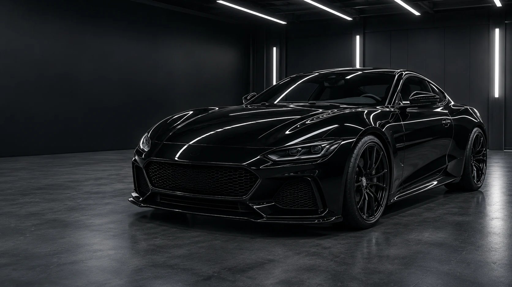
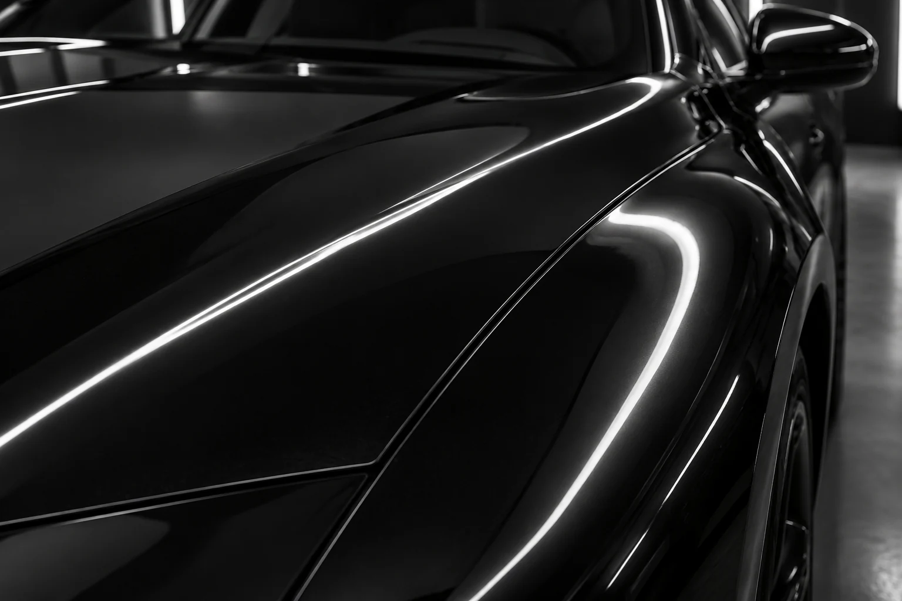
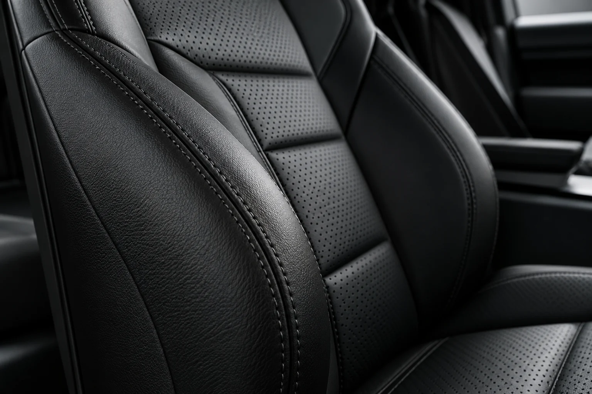
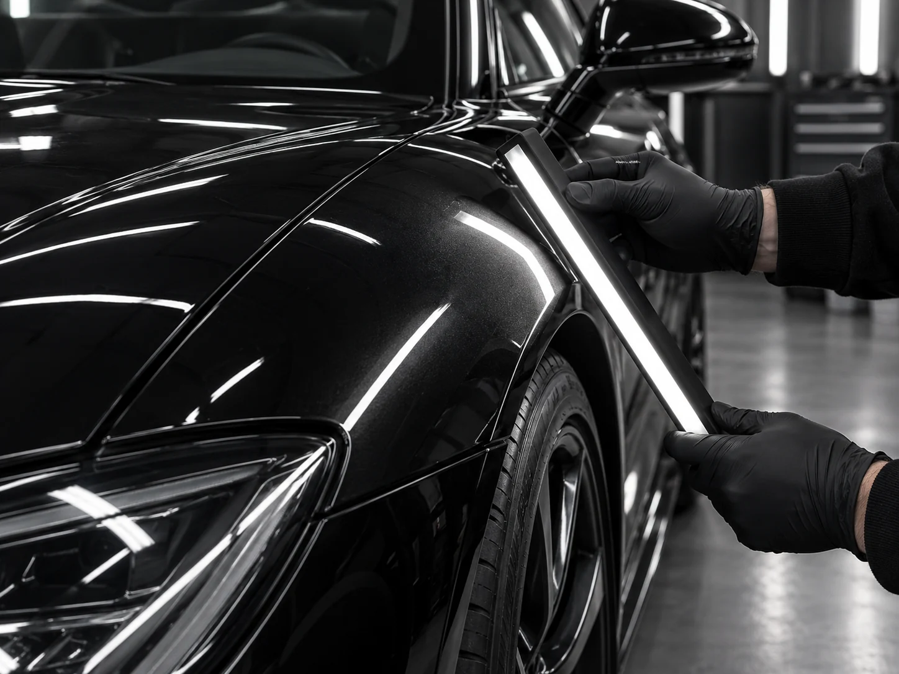
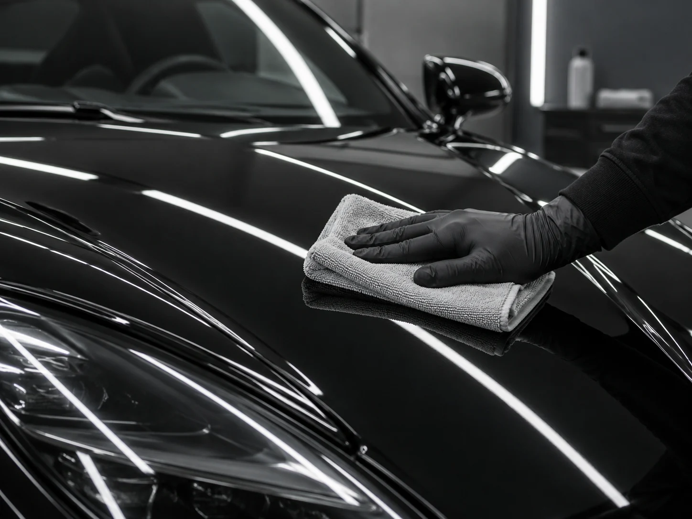
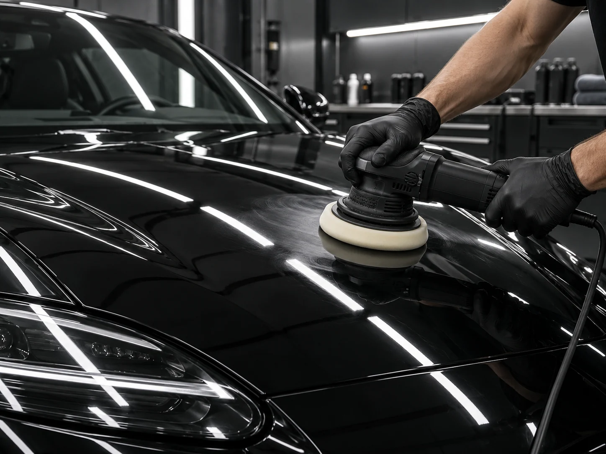

Для регулярного ухода
Освежить автомобильRefresh
Чистый кузов и опрятный салон после повседневных поездок.
от 6 000 ₽Около 4 часов
- Мойка кузова
- Очистка дисков и стёкол
- Базовая уборка салона

Студия ухода за автомобилем
Глубина цвета. Чистая фактура.
Уход, который начинается с поверхности.
На лаке — линия отражения.
В салоне — естественная фактура.
Рассмотрите поверхности ближе.

Следите за отражением: ровный световой след помогает рассмотреть поверхность и заметить искажения.

Рассмотрите зерно кожи, перфорацию и шов. Естественная поверхность сохраняет рельеф без масляного блеска.
Визуальная серия создана с помощью ИИ для концепта. Это иллюстрации материалов, а не реальные работы или сравнение «до / после».
Программы ухода
От регулярной очистки до комплексного ухода. Сравните состав и рассчитайте вариант под тип кузова.
Для регулярного ухода
Чистый кузов и опрятный салон после повседневных поездок.
Для потускневшего кузова
Выразительный глянец и защитный уход за лакокрасочным покрытием.
Для кузова и салона
Уход за внешними поверхностями и глубокая очистка материалов внутри.
Цены и сроки демонстрационные. Итог зависит от размера автомобиля и состояния поверхностей; перед работой нужен осмотр.
Четыре этапа, у каждого — своя задача.

Оценить покрытие под направленным светом и определить объём ухода.

Очистить поверхность от загрязнений перед следующим этапом.

Выполнить уход по выбранной программе с учётом состояния материала.
Рассмотреть отражение и убедиться в равномерности финиша.
Кадры этапов — ИИ-иллюстрации демонстрационного процесса.
Предварительный расчёт
Выберите параметры. Смету можно сохранить на устройство.
Пара деталей о расчёте и программах.
Для регулярной очистки — Refresh. Если кузову нужна полировка — Signature. Если вместе с кузовом нужен глубокий уход за салоном — Complete. Окончательный состав работ определяют после осмотра.
В этом деморасчёте учитываются программа, тип кузова и состав для стёкол. Коэффициент к базовой цене: 1 для седана, 1,2 для кроссовера и 1,4 для большого внедорожника. Дополнение стоит 3 000 ₽.
Это демонстрационный проект без записи и отправки заявок. Вы можете сравнить программы и скачать предварительный расчёт. Адреса и контакты реальной студии здесь не указаны.